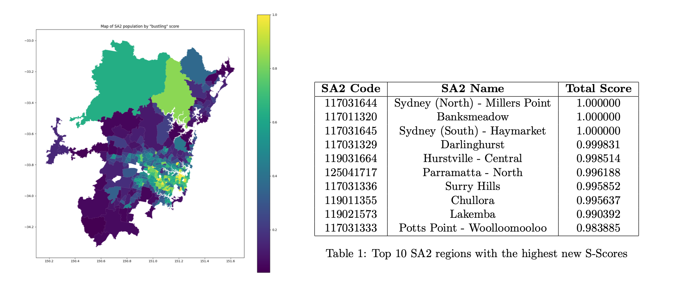

Big Data for Sydney
An analysis of SA2 regions using open source data from the Australian Bureau of Statistics.

Overview
This project uses ABS open data to study SA2 statistical regions across Greater Sydney. The work combines cleaning and aggregating spreadsheets or APIs with maps and charts to compare suburbs and regions on metrics that matter for policy and planning.
What I did
Selected SA2 boundaries and indicators relevant to the research question, merged datasets, and checked data quality. Built visual summaries (for example choropleths or small multiples) and wrote up findings in plain language.
Gallery
Tools & stack
Python and R, ABS data products, GIS and mapping libraries as needed, and documented analysis in a report or notebook.